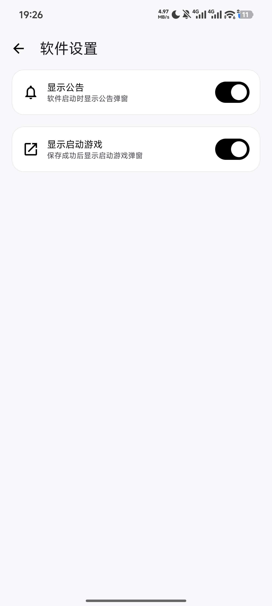

用了半年 PUBG Tool，才发现它藏着这 5 个没人提的冷门技巧
PUBG Tool 大家都用它解锁 120 帧，但长按关闭、飞行模式抄卡密、60Hz 屏幕别瞎拉这些隐藏功能，官方教程根本没讲透。
我之前一直以为 PUBG Tool 就是个"一键解锁画质帧率"的懒人工具——装上、点一下、进游戏调极限帧率，完事。用了大半年才发现，它藏着好几个官方不怎么宣传的冷功能，有的能帮你避开深坑，有的在关键时刻救你一命。
想跟着一起折腾的话，安装包从官方下载就行。今天把我翻了底朝天才摸到的东西整理一下，说不定其中有一两个你用得上。
长按"解锁画质帧率"按钮——关闭功能而不是叠加
这个藏得真深，我也是某次切游戏版本参数冲突了才误打误撞发现的。
PUBG Tool 的主界面上有个大大的"解锁画质帧率"按钮，所有人都知道点一下是开启。但长按它会弹出一个确认框，问你要不要"关闭对应的功能"——包括已经开启的 SG 优化引擎。
为什么这很重要？因为如果你之前给国际服配了一套参数，现在切到和平精英，直接点开启是在旧参数上叠加新设置，容易出现画面撕裂、帧率锁死、甚至启动闪退。长按先清空干净再重配，是唯一安全的切换方式。
官方教程只提了一句"长按关闭"，没说什么时候该用。我的经验是：只要你换了游戏版本、换了画质档位、或者发现画面不对劲，先长按清一下再开新的——比卸载重装省事多了。
飞行模式 + 断网——忘记卡密了怎么办
如果你买了 Pro 版卡密，激活后记在某个备忘录里但现在找不到了，PUBG Tool 有个离线技巧能帮你抄回来。
步骤很简单：开启飞行模式、关掉 WiFi、打开 PUBG Tool 或 PUBG Tool HD——应用会检测到自己断网，然后把已激活的卡密完整显示在界面上，同时自动复制到剪切板。
这招是官网在卡密教程里偷偷提的，正常联网状态下它绝不会显示。我上个月换手机就靠这个把卡密找回来了，不然得联系卖家补发还不一定能行。
但记住，购卡后 72 小时内必须激活——超过这个时间卡密可能被系统回收删除，飞行模式也救不了。卡密激活后自己存好，发卡网只保留购买记录一个月，过了就查不到了。

60Hz 屏幕别硬拉 120 帧——反常识的帧率设置逻辑
这可能是 PUBG Tool 最大的坑，也是最多人踩的地方。
样本文档里有个章节专门讲这个，但标题太技术化容易被跳过。简单说：如果你的手机屏幕最高只支持 60Hz，用 PUBG Tool 解锁 120 帧几乎没收益，反而有害。
原因很简单——屏幕物理上每秒最多显示 60 帧，游戏渲染到 120 帧，多出来的 60 帧全部被屏幕丢弃。你肉眼看到的流畅度和真 60 帧没区别，但 GPU 一直在满负荷输出 120 帧的工作量，功耗翻倍、发热加剧，手机提前触发温控降频，最后实际帧率可能还不如老老实实跑 60 帧稳定。
90Hz 屏幕同理，拉到 120 帧大约有 25% 的帧被丢弃，收益非常有限。只有 120Hz 及以上的屏幕，解锁 120 帧才是真有用。
后来去pubgtool文档翻了一下才确认，PUBG Tool 官网原话是"用处不大"——不是完全没用（输入延迟可能略低），但远不如配一块高刷屏幕来得实在。如果你不确定自己的屏幕刷新率，去手机设置 → 显示 → 屏幕刷新率里看一眼，别再盲目拉满了。
SG 优化引擎——新手别跳过，老手可以关掉
"开启 SG 优化"按钮就在"解锁画质帧率"旁边，但它的作用是什么？我之前以为就是个自动调参的噱头，后来才搞清楚它和手动设置的关系。
PUBG Tool 官方明确区分了两种方案：
基础方案：直接点"解锁画质帧率"——写入你手动选的画质和帧率参数，SG 引擎不参与。适合对自己的设备性能门儿清、知道该选什么档位的老玩家。
进阶方案：先开 SG 优化，再解锁——引擎根据你的设备型号自动生成一套参数，然后叠加你的手动选择。适合刚上手、不知道自己手机能不能撑住高清+120 帧的新手。
有意思的是，SG 引擎自动生成的参数是真的有用。我拿旗舰机测试过，它给骁龙 8 Gen 3 选的画质档位比我之前手动拉的更保守，但稳定性反而更好——长时间对局不会掉帧，温控处理也更合理。
反过来，如果你对参数已经很熟悉，关掉 SG 引擎自己配反而可能更激进、帧率更高。新手别急着关，老手也别全信它——这俩是互补关系，不是谁比谁高级。
LTPO 屏幕的隐藏福利——它会自动拉满刷新率
现在很多旗舰手机用的是自适应刷新率屏幕（LTPO/LTPS）——静止画面降到 1Hz 省电，游戏场景自动拉满。PUBG Tool 在这种屏幕上有个特殊的适配逻辑。
你不需要手动去开什么开关，也不用在 PUBG Tool 里做额外配置。当你进入游戏对局后，屏幕会自动检测到当前是全屏游戏场景，把刷新率拉到硬件上限。这时候 PUBG Tool 解锁的 120 帧就能完整显示出来，画面流畅度是肉眼可见的提升。
这招对用户是透明的，官网提了一句但没展开讲。值得注意的是，部分手机默认在省电模式下锁 60Hz——如果你用的是小米或一加，记得去设置里把屏幕刷新率切到"自适应"或"120Hz"，别被省电模式坑了。
最后说说 Shizuku——每次重启都要重新配对
这个不算功能，算个必须知道的门槛。
PUBG Tool 的 Shizuku 版不需要 Root，通过 ADB 获得 Shell 权限绕过 Android/data 目录限制，是 Android 11+ 上的标准方案。但 Shizuku 通过 ADB 授予的权限在手机重启后会丢失——也就是说，每次关机再开机，你都得重新执行配对和启动步骤。
配对码有效期只有 10 秒，超时了得重新获取。Android 13+ 的用户还需要给 Shizuku 应用加上"不限制"的电池优化权限，否则后台容易被杀。
这个设计很烦人，但没办法——这是 Android 系统的安全机制，不是 PUBG Tool 的 bug。嫌每次插 USB 麻烦的话，可以用无线调试功能配对，前提是手机和电脑在同一个 Wi-Fi 下。
总结
PUBG Tool 没那么简单。从长按关闭的小按钮、到飞行模式找卡密的离线技巧、再到 60Hz 屏幕别瞎拉的反常识结论——这些东西散落在官网不同角落，没整理过，很少有人一次性摸清。
把一个工具用透，有时候比找十个替代品更省事。
关于这款工具的完整资料，我分别同步到了 GitHub、Gitee 和 GitCode 三个仓库，主要是考虑到不同平台的访问便利性和备份需求，内容都是同步更新的。